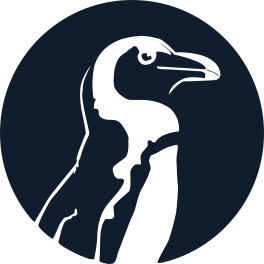

<mat-sidenav-container class="sidenav-container">
  <mat-sidenav #drawer class="sidenav"
      fixedInViewport="false"
      [ngClass]="{hidden: (isHandset$ | async) === false}"
      [attr.role]="(isHandset$ | async) ? 'dialog' : 'navigation'"
      [mode]="(isHandset$ | async) ? 'over' : 'side'"
      [opened]="(isHandset$ | async) === false">
    <mat-nav-list>
      
      <h1>Portfolio</h1>
      <hr>
      <a mat-list-item href="">Home</a>
      <a mat-list-item href="#education">Education</a>
      <a mat-list-item href="#experience">Experience</a>
      <a mat-list-item href="#projects">Projects</a>
      <a mat-list-item href="#skills">Skills</a>
    </mat-nav-list>
  </mat-sidenav>
  <mat-sidenav-content>
    <mat-toolbar color="primary" class="toolbar">
      <button
        class="nav-button"
        type="button"
        aria-label="Toggle sidenav"
        mat-icon-button
        (click)="drawer.toggle()"
        *ngIf="isHandset$ | async">
        <mat-icon aria-label="Side nav toggle icon">menu</mat-icon>
      </button>
      <span class="spacer"></span>
      <div *ngIf="(isHandset$ | async) === false">
        <a href="">Home</a>
        <a href="#education">Education</a>
        <a href="#experience">Experience</a>
        <a href="#projects">Projects</a>
        <a href="#skills">Skills</a>
      </div>
    </mat-toolbar>
    <ng-content></ng-content>
  </mat-sidenav-content>
</mat-sidenav-container>
